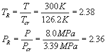
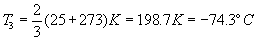

MODULE 3: EQUATIONS OF STATE
(fragments of the CD that comes with
Cengel&Boles's book "Thermodynamics", 3-d edition, McGraw-Hill,
1998)
Example 1
Determine the particular gas constant for
air and hydrogen.
Example 2
Calculate the specific volume of nitrogen at 300 K and 8.0 MPa and compare the result with the value given in a nitrogen table as v = 0.011133 m3/kg.
From Table A.1 for nitrogen
Tcr = 126.2 K, P cr = 3.39 MPa R = 0.2968 kJ/kg K
Since T > 2T cr and P < 10P cr, we use the ideal gas equation of state
Nitrogen is clearly an ideal gas at this state.
Example 3
An ideal gas having an initial temperature of 25ºC under goes the two processes described below. Determine the final temperature of the gas.
process 1-2: The volume is held constant while the pressure doubles.
process 2-3: The pressure is held constant while the volume is reduced to one-third of the original volume.
process 1-3: orbut V3 = V1\3
and P3 = P2 = 2P1
Therefore